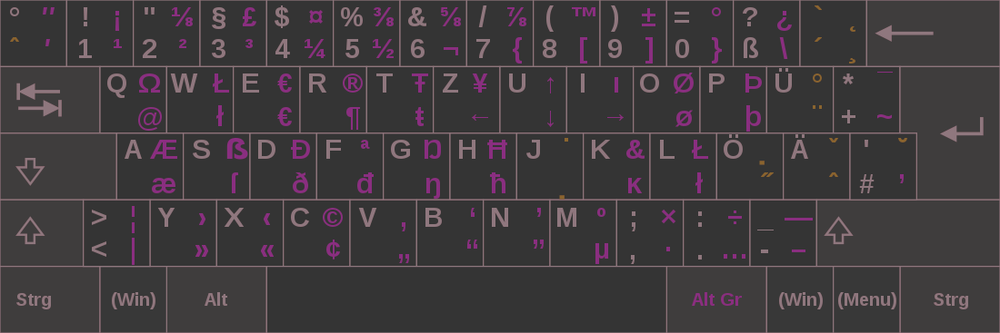

by Jerry Sky
Notes on the German language.
Language learning strategy implementation
Präpositionen
„Zu“ Regeln
Rektion
„Da“ Wörter
Verb conjugation
Expression map
Words

Dokument, Artikeln und andere Texten kann man analysieren, um ihn Sprachkenntnisse zu bessern.